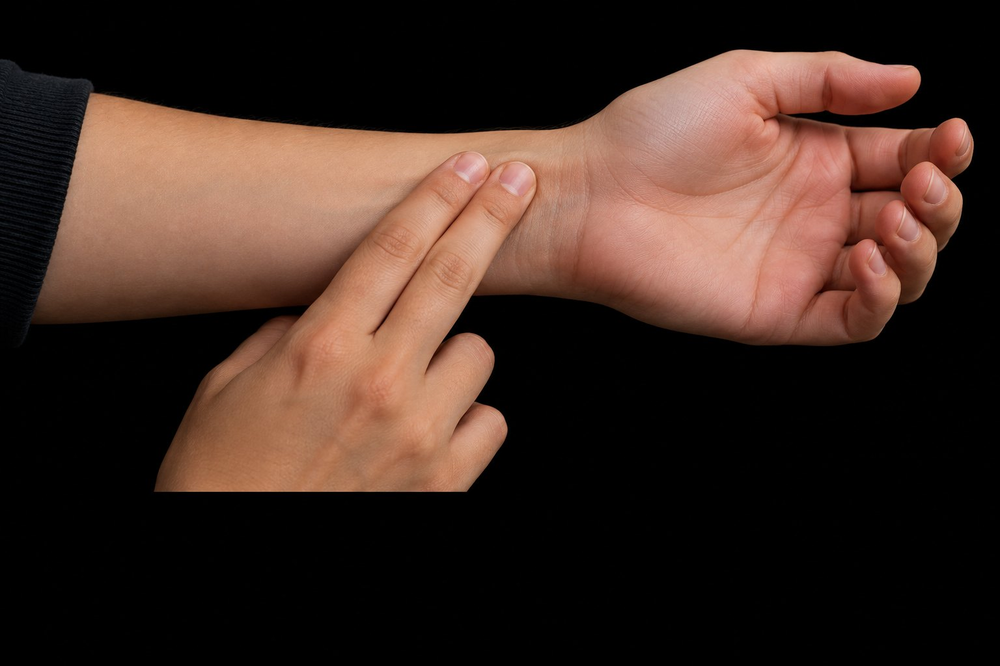

천천히 걷기, 가벼운 스트레칭
빠르게 걷기, 자전거 타기
달리기, 줄넘기, 축구·농구 경기
지구력 훈련 뒤 한 번 뛸 때 내보내는 혈액량이 늘 수 있다.
심장 변화가 줄어드는 정도와 속도는 사람과 훈련에 따라 다르다.
운동 중 가슴 통증·실신·심한 두근거림이 나타나면 멈추고 교사나 보호자에게 알린다.
운동 중 늘 수 있지만, 혈액 속 엔도르핀이 뇌에 들어가 기분 변화를 직접 일으킨다는 근거는 충분하지 않다.
운동 뒤 혈중 농도와 기분 변화가 함께 관찰됐다. 뇌의 기분 조절에 관여할 수 있지만, 사람에서 원인으로 확정되지는 않았다.
일주일에 며칠 하는가
얼마나 힘들게 하는가
하루에 얼마나 오래 하는가
어떤 운동을 하는가
1분 동안 심장이 뛴 횟수. 15초 세고 ×4.
최대 심박수는 220 − 나이. 안정 시~최대 사이 몇 %인지로 본다.
한 번에 더 많은 피를 내보내 쉴 때 덜 뛴다.
오래 달린 뒤 일부가 느끼는 편안함과 행복감. 원인은 연구 중이다.
청소년은 하루 평균 60분 이상 움직인다. 준비·정리 운동도 챙긴다.
| → Space 화면 클릭 | 다음 (단계 → 다음 장) |
| ← 오른쪽 클릭 | 이전 |
| R | 이 장 애니메이션 다시 보기 |
| T N | 대본 보기 |
| O | 전체 보기 |
| F | 전체 화면 |
| M | 대본 읽어 주기 켜기/끄기 |
| B / W | 검은 화면 / 흰 화면 |
| 숫자 + Enter | 그 장으로 이동 |
| 좌우로 밀기 | 전자칠판·폰에서 넘기기 |